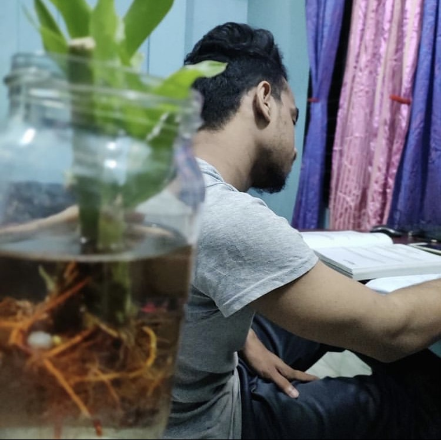

Saimon Ahmed-the future of the tech world.

Dreaming to be the best among the tech personalities in this world though I know I am not nowhere near it right now but I believe I can do it and In Shaa Allah, I will make it happen.
Who gave me this belief?
Belief-the inner strength to do something. But where we get this belief? It comes from my creator. When I pray with conviction I find the strength to keep moving with courage and hope. I become optimistic about my future when I pray to my creator.
But is belief can take you so far? I have no "Yes"/"No" answer for this question because it requires an explanatory answer. When start working hard with the name of your creator and keep remembering Him throughout your journey, you find a strength inside you but if don't work hard and just keep praying, you don't find true strength inside you, you feel like you are missing something. What actually you are missing? You are missing the guidance that Allah gave you, you are walking in a way that is not shown by our Prophet(PBUH). And if you are just working hard and do not pray again you are in wrong route because you are not asking help from the biggest source you could get it - your creator. And eventually you get frustrated many times in your journey and sometimes you feel you are giving up. So, you need to work hard and keep asking Allah for helping you.
What is the plan for reaching this far?
Plan! Plan is truly important for achieving something.
I have a dream and I have a plan for it.
My plan is:
- I want to complete the frontend career path course on Scrimba without React part.
- I want to complete the web development fundamental course on Coursera.
- I want accomplish John Smilga's project for solidifying my learning
- I want to complete frontendexpert.io course for preparing interview.
- Now I want to search for jobs.
- In the mean time, I want complete Colt Steele's JavaScript Algorithm course on Udemy.
- Now I want to come back to Scrimba again to complete React courses. Because without React, it is hard to get a job.
- After getting a job, I want start data structure and algorithm course on Coursera.
- I want to solve a lot quality problem-solving question.
- I want to try for jobs at FAANG.
- I want to complete Ph.D on computer science
- I want to do something for the Deen
What are the obstacles I might face?
No path is completely smooth. There is always some issues in the way
My obstacles are:
- First of all, I don't have green card
- Secondly, I didn't completed my graduation
- Lastly, hidden obstacles that are not clear in my sight
I am not worried about the obstacles I have to face rather I am concentrating on mercy and help of my creator-Allah. Obstacles are sometimes blessings from Allah. Take these blessings, face these blessings with beautiful patience and keep going.